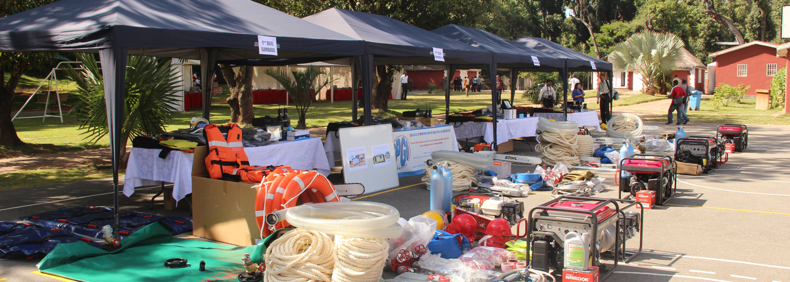

{% extends 'index.html' %}
{% load i18n %}
{% comment %}
This is where you can override the hero area block. You can simply modify the content below or replace it wholesale to meet your own needs. 
{% endcomment %}
  {% block hero %}
<div id="carousel-example-generic" class="carousel slide jumbotron" data-ride="carousel">
  <!-- Indicators -->
  <ol class="carousel-indicators">
    <li data-target="#carousel-example-generic" data-slide-to="0" class="active"></li>
    <li data-target="#carousel-example-generic" data-slide-to="1"></li>
    <li data-target="#carousel-example-generic" data-slide-to="2"></li>
  </ol>

  <!-- Wrapper for slides -->
  <div class="carousel-inner" role="listbox">
    <div class="item active">
      
      <div class="carousel-caption">
        
	<div id="idslider" class="container">
              <h1></h1>
              <p></p>
              <p></p>
              <span></span>
    </div>
      </div>
    </div>
    <div class="item">
      
      <div class="carousel-caption">
     	 <div id="idslider1" class="container">
              <h1></h1>
              <p></p>
              <p></p>
              <span></span>
   	 </div>
 
       </div>
    </div>
	 <div class="item">
     		 
	         <div class="carousel-caption">
		<div id="idslider2" class="container">
             	 <h1></h1>
            	 <p></p>
             	 <p></p>
              <span></span>
    </div>
 
    </div>
    </div>
   </div>
  

  <!-- Controls -->
  <a class="left carousel-control" href="#carousel-example-generic" role="button" data-slide="prev">
 
    <span class="sr-only">Previous</span>
  </a>
  <a class="right carousel-control" href="#carousel-example-generic" role="button" data-slide="next">
 
    <span class="sr-only">Next</span>
  </a>
</div>   

{% endblock %}
